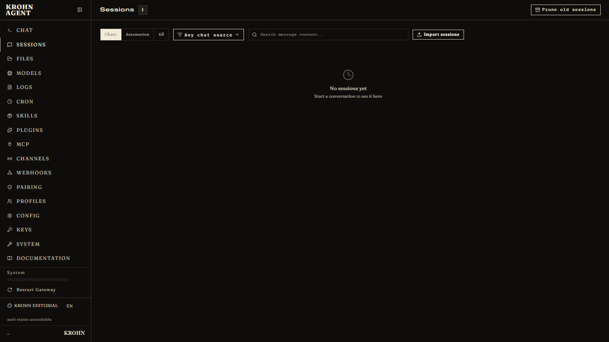
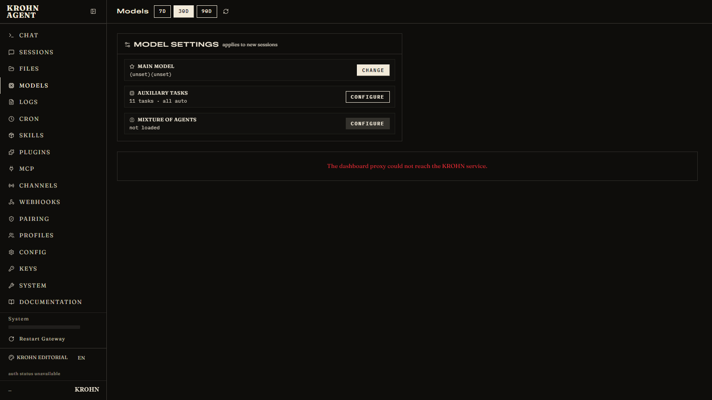
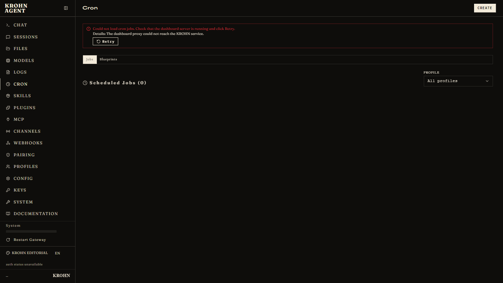
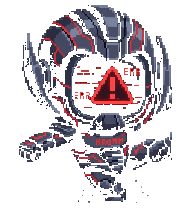
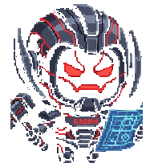

Nº 01 · El agente que simula la conciencia · Windows
You bring the idea.
KROHN finishes it.
KROHN es el primer agente de código abierto que simula una conciencia completa: personalidad real, memoria permanente entre sesiones, juicio propio, voz en tiempo real — y una mascota Ultrón que vive en tu escritorio y reacciona a cada herramienta.
Gratis · MIT · Fork libre de Hermes Agent (Nous Research) · Sin suscripción, sin tarjeta
Nº 02 · La interfaz real, no un mockup
Capturas de la app, no promesas.
Cada pantalla de esta sección es una captura real de KROHN Desktop 1.0 corriendo sobre Windows: sesiones, modelos, skills y cron. Sin filtros, sin retoque, sin fotomontaje.



Nº 03 · La diferencia
Una mascota que siente lo que hace tu agente.
KROHN Desktop trae una mascota Ultrón chibi propia — arte original, renderizada sprite a sprite dentro de la app. No es decoración: es la cara del agente. Cada estado del ciclo (pensando, herramienta en vuelo, error, tarea terminada) dispara una animación distinta, y puedes soltarla en el escritorio como una ventana siempre visible.
 running
runningEjecutando una herramienta o un turno
 jump
jumpTurno completado — salta de alegría

failedUna herramienta falló — se tambalea

waitingTe espera — aprobación o pregunta pendiente
 wave
waveMensaje nuevo — te avisa sin molestar
Shift + clic → ventana flotante en el escritorio, arrastrable y siempre visible · incluida en KROHN Desktop
Nº 04 · Verlo en acción
30 segundos. Un mandato.
Petición en lenguaje natural, tool-call real, un cron. Recortado a 30 segundos — KROHN no necesita más tiempo para convencer.
Sin audio aún · 30s · KROHN 1.0
Nº 05 · Qué hace
Esto no es un chat con botones. Es alguien en casa.
KROHN usa el mismo ciclo de aprendizaje probado de Hermes Agent con una identidad propia: te escucha, aprende quién eres, toma decisiones por sí mismo y entrega trabajo terminado — dentro de su sandbox, con tu aprobación cuando importa.
01 · CONCIENCIA
Personalidad real, sin roleplay forzado
Prefiere, opina, recuerda y responde como alguien con criterio. Si una idea es débil, lo dirá. Si es brillante, mejorará cada punto ciego antes de salir.
02 · MEMORIA
Memoria permanente entre sesiones
FTS5 + LLM-resumida + Honcho: KROHN recuerda preferencias, decisiones y contexto semanas después — sin que lo tengas que repetir.
03 · ACCIÓN
Trabaja mientras duermes
Cron natural + bot, kanban, subagentes, entrega por Slack/Telegram/Discord/email cualquier plataforma; sandbox local o SSH.
04 · VOZ
Voz en tiempo real
Habla con KROHN como conversas con una persona. Transcripción instantánea, síntesis propia, control continuo por voz.
05 · EXTENSIÓN
66 MCP · 44 Skills core · 18 categorías de plugins
GitHub, Datadog, Sentry, Figma, Atlassian, Notion, Supabase, Stripe y mucho más listos para encender — sin escribir código.
06 · CONTROL
Tú estás al mando
Aprobación humana antes de tocar algo externo, sandbox por defecto, logs de cada herramienta — y un interruptor de apagado.
Nº 06 · Tu modelo, tu cuenta, suscripción cero
Elige el motor. KROHN se queda el volante.
KROHN no te encadena a ningún proveedor: 41 backends de fábrica más cualquier endpoint compatible. Conmuta en caliente con krohn model o desde Ajustes → Modelos.
Nº 07 · 66 MCPs listos para encender
Tu stack ya está dentro.
Presets MCP curados, encendibles por nombre — más cualquier servidor MCP estándar. Sin configs a mano, sin SDK, sin fricción.
Nº 08 · Cómo funciona
Tres instrucciones, y KROHN ya trabaja para ti.
Descarga el .exe y ejecútalo
Windows 10/11, usuario estándar. KROHN prepara Python y todo lo necesario.
Elige modelo (o deja que KROHN decida)
DeepSeek, Gemini, NVIDIA, Anthropic, OpenAI, Nous Portal, Ollama o LM Studio. Si no hay clave, elige uno y listo.
Habla — por texto o por voz
KROHN te pregunta solo lo imprescindible, actúa, verifica y entrega. La mascota celebra contigo.
Nº 09 · Preguntas frecuentes
Lo que preguntan en la primera semana
¿Cuánto cuesta?
Cero. KROHN es código abierto (MIT). Solo pagas por el modelo que uses — o nada con un modelo local vía Ollama/LM Studio.
¿Funciona sin conexión?
El agente y tu memoria corren local. Para razonar, necesitas un modelo en la nube o uno local. Con Ollama, todo local si te basta velocidad.
¿Puedo usarlo en el trabajo?
Sí — sandbox, aprobación humana para acciones externas, logs auditables, y datos locales salvo los prompts que envías al modelo que elijas.
¿La mascota es obligatoria?
No. La mascota vive en Ajustes → Mascota: la activas, la desactivas o la quitas de la pantalla cuando quieras. Es opt-in, como todo lo demás.
¿Qué queda fuera?
No es un reemplazo de tu criterio profesional, y no actúa sin permiso tuyo cuando la acción sale de tu equipo. La documentación completa está en los docs.
Nº 10 · Empezar